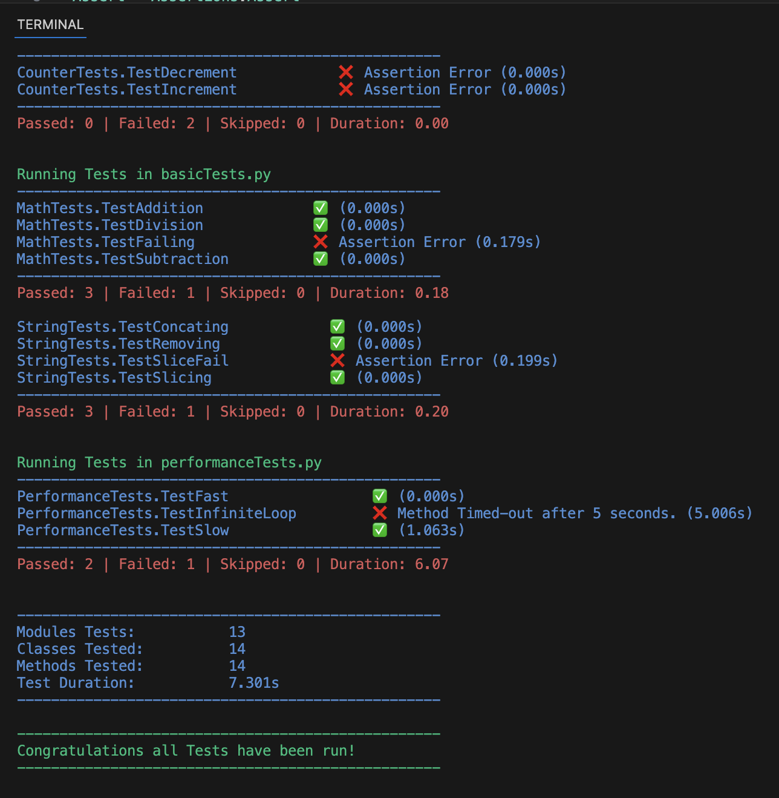

2026
Computer science & Engineering
about
work
contact
01 / Brief
Building Systems. Exploring possibilities.
Graphics, and systems developer focused on simulation realtime physics and researching time and space efficiency.
02 / Projectsview all
Best Works

Python Testing Framework
Python / Tooling
Python Testing Framework
Python / Tooling
Python Testing Framework
Python / Tooling
03 / Focus
Areas of Interest
04 / Background
A little about me!
I have spent the last 4 years at Shawnee State University (SSU) in the Digital Simulation & Gaming Engineering Technologies degree. Focusing in realtimes physics and a wide range of other computer science topics from graphics programing to developing neural networks. My favorite topics centered around creating tools like custome SDK's for a video game, testing, and a custom C web based framework like flask. I absolutely love graphics, simulation, and tool developement. I know a wide variety, but I found myself enjoying those projects the most.
During my Sophmore and Junior years I participated in many leadership programs and roles such as a Resident Asssitant and club activies. I have always been an advocate for growth in myself and others. Encouraging others to challenge their way of thinking and to avoid becoming complacent which I am all to familiar with. I take a hands on approach to leadership, constantly asking for advice from others and knowning when im not fit for the job.
Committing myself to future growth eventually as I learn more I want to work on projects that help develop new techniques for Graphics and Physics Simulation.
Interested in Working together?